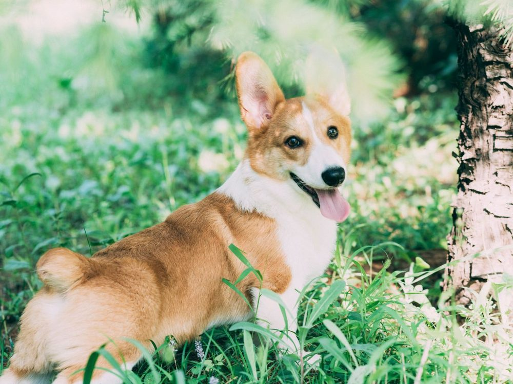

Surprise Community Park Dog Park Small + large sections, shade structures
- Fenced Yes — fenced dog park with a holding (entry) area
- Water Yes — drinking fountains for pets and owners
- Shade Yes — two shade structures in each section, plus landscaped trees
- Small-dog area Yes — separate small-dog park for dogs 16 in. or shorter at the shoulder and under 35 lb
- Restrooms Yes — restrooms in Surprise Community Park (location relative to the dog park not stated)
- Hours Daily 6 a.m.–10 p.m. (city park hours)
Surprise’s original dog park sits inside the city’s flagship park, with separate small- and large-dog sections (about 1.5 acres combined), pet and owner drinking fountains, two shade structures per section, picnic tables, a holding area, and turf with landscaped trees, per the city’s recreation guide. In October 2024 the city closed it for two weeks to improve access from the tennis parking lot, level the surface, and upgrade irrigation; it also closes periodically for turf maintenance, when the city points visitors to Dick McComb. The rest of the park has a 5-acre urban fishing lake, the Playground of Dreams, lighted pickleball and basketball courts, ramadas, and restrooms. City dog parks page · Dog park rules (PDF) · City recreation guide · City notice (Oct. 2024).